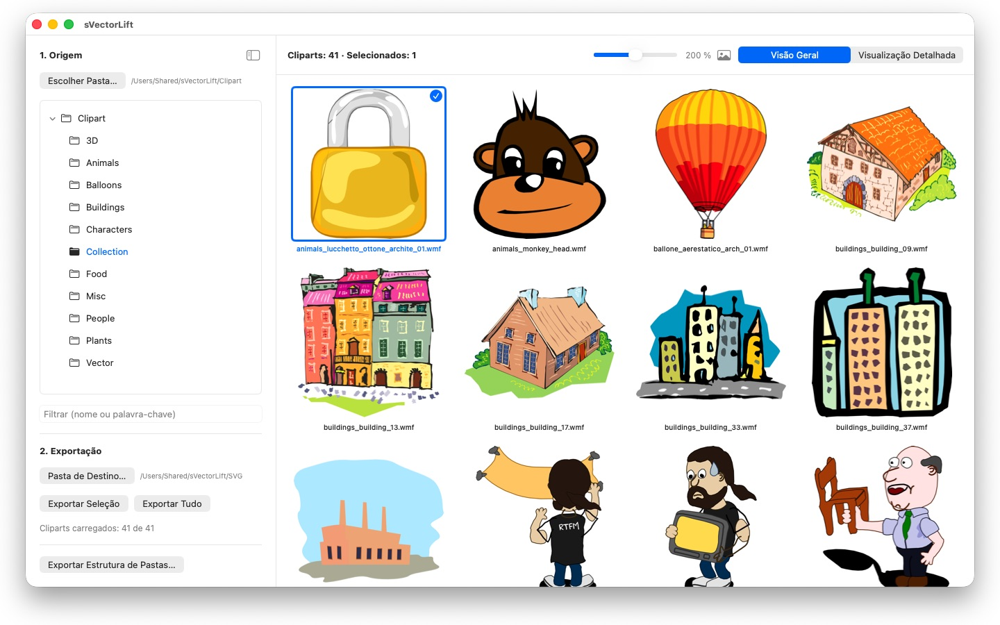
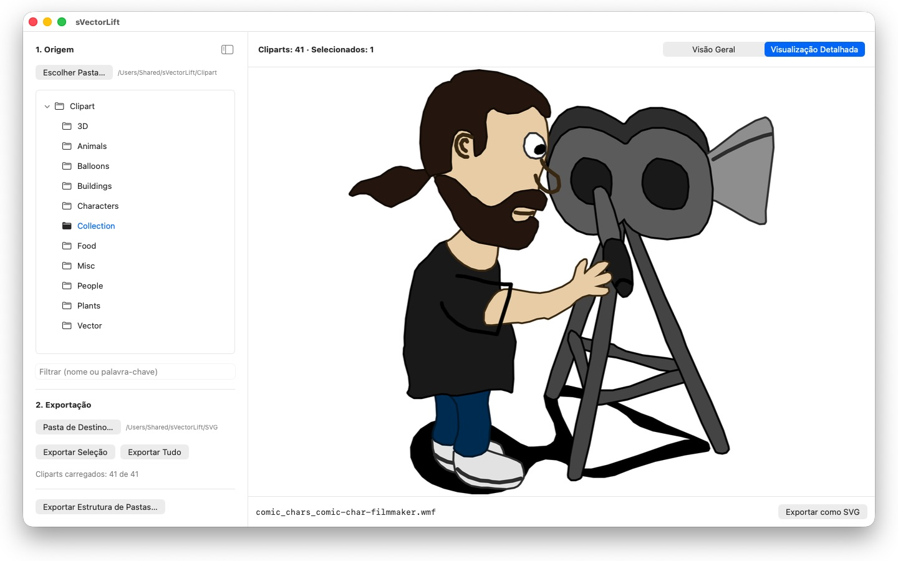

Milhares de cliparts em CDs antigos do CorelDRAW, presos em formatos que ninguém mais abre. O sVectorLift os transforma em imagens com as quais você pode trabalhar hoje.
 Assista ao vídeo – 3 minutos no YouTube, em inglês com legendas em português
Assista ao vídeo – 3 minutos no YouTube, em inglês com legendas em português Visão rápida – pouco mais de um minuto no YouTube, em inglês com legendas em português
Visão rápida – pouco mais de um minuto no YouTube, em inglês com legendas em português

Em algum lugar da estante há um CD cheio de cliparts que você comprou um dia. Os arquivos continuam lá — mas nenhum programa do seu Mac consegue abri-los.
24 idiomas: Deutsch · English · Español · Français · Italiano · Nederlands · Português · Svenska · Norsk · Suomi · Polski · Čeština · Hrvatski · Magyar · Română · Türkçe · Русский · Українська · فارسی · ไทย · 日本語 · 한국어 · 简体中文 · 繁體中文
O sVectorLift torna essas imagens úteis de novo. Ele reconstrói cada desenho como um SVG de verdade: nítido em qualquer tamanho, editável e pronto para usar no Illustrator, Affinity, Inkscape, Sketch, Figma — ou no seu site. Não apenas para ver de novo. Para usar de novo. É isso que significa o “Lift” do nome: arte vetorial antiga, elevada ao nível das ferramentas com que você trabalha hoje.
FORMATOS COMPATÍVEIS
- Documentos do CorelDRAW (.cdr), versões 6 a 9
- Corel Binary Meta File (.cmx) — inclusive a antiga variante CDRX, na qual outras ferramentas falham
- Windows Metafile (.wmf)
- Computer Graphics Metafile (.cgm)
- QuickDraw 3D Metafiles (.3dm, .3dmf), renderizados como imagem
- Scalable Vector Graphics (.svg), exibidos diretamente
Muitos arquivos com a extensão .cdr, na verdade, não são documentos do CorelDRAW, e sim CMX — e é exatamente aí que os conversores comuns falham. O sVectorLift lê os dois.
O sVectorLift foi feito para coleções de clipart: desenhos, símbolos, ilustrações. Não é um programa de diagramação e não pretende recriar folhetos de várias páginas nem artes-finais para impressão.
CONVERSÃO VETORIAL DE VERDADE
Aqui ninguém fotografa uma miniatura de pré-visualização. O sVectorLift lê o próprio desenho: traçados e curvas de Bézier, cores de preenchimento, degradês, contornos e padrões de traço, preenchimentos de padrão e textura, fotos incorporadas e objetos de texto. O resultado são dados vetoriais reais, que você pode redimensionar, recolorir e editar — e não a imagem de um desenho.
Já as imagens puramente raster são exportadas como PNG, para que nada se perca.
Precisa de uma imagem em vez de arte vetorial? “Exportar como PNG” e “Exportar como JPG” transformam qualquer desenho em imagem, inclusive arquivos SVG — no tamanho que você define em Ajustes.
EXPLORAR A COLEÇÃO
- Árvore de pastas de toda a coleção de cliparts, incluindo subpastas
- Grade de miniaturas vetoriais nítidas, com tamanho ajustável de forma contínua
- Visualização detalhada — use as teclas de seta para percorrer a pasta
- Filtro por nome ou palavra-chave
- Seleção múltipla como no app Fotos: clique, ⌘-clique, ⇧-clique, seleção por arrasto, ⌘A
- Abrir um arquivo individual direto do Finder (“Abrir com” ou clique duplo)
- “Pastas Recentes”, que lembram a subpasta e o arquivo selecionado
- Exportar a seleção ou a pasta inteira de uma só vez
- Converter estruturas de pastas inteiras, com todas as subpastas, de uma só vez — a estrutura é mantida na pasta de destino
- Renomear, mostrar no Finder, mover para o Lixo
RÁPIDO E LEVE
As miniaturas são geradas apenas para o que você está vendo no momento — em segundo plano e com cache. Pastas grandes abrem na hora, em vez de passar minutos processando milhares de arquivos.
Tudo fica no seu Mac. Nenhuma conexão de rede, nenhuma conta, nenhuma coleta de dados.
CorelDRAW é uma marca da Corel Corporation. O sVectorLift é um programa independente, sem nenhum vínculo com a Corel.
- Requer macOS 14 ou posterior
- 24 idiomas
- Suporte: SwiftAppsBavaria@gmx.net
Mais Apps
sCollect
Organize música, filmes, audiolivros, e-books e outras coleções em uma biblioteca.
sCollectPlay
O player da biblioteca: reproduza música, filmes, audiolivros e podcasts diretamente de uma pasta, de um XML do iTunes ou de uma biblioteca do sCollect.
sCollectPlay Lite
A edição enxuta do sCollectPlay: basta abrir uma pasta, um XML do iTunes ou uma biblioteca do sCollect e reproduzir música, filmes, audiolivros e podcasts – com playlists, faixas de áudio e de legendas, câmera lenta e avanço quadro a quadro. Apenas uma fonte fica aberta por vez. O navegador de colunas, as playlists próprias e a lista de fontes usadas recentemente estão disponíveis somente na versão completa.
sName2Date
Gravar a data do nome do arquivo como data de captura em fotos, vídeos e gravações de áudio – para que um arquivo como IMG_20240115_103000.jpg fique na ordem certa em qualquer gerenciador de fotos.
sName2Date Lite
A edição para um arquivo por vez: gravar a data do nome do arquivo como data de captura em uma foto, um vídeo ou uma gravação de áudio, defini-la manualmente, passar o nome para a notação ISO e desfazer tudo com ⌘Z – os mesmos recursos do sName2Date, só que sem pastas inteiras.
SwiftRename
Do cartão de memória ao acervo: nomear fotos e vídeos pela hora da captura, organizá-los por ano, mês ou dia e detectar duplicatas — também em RAW.
sBikeBridge
Analise seus passeios de bicicleta sem enviá-los para um portal: importe arquivos FIT de qualquer ciclocomputador que grave nesse formato, além de GPX e TCX. Os passeios ficam em uma biblioteca própria no Mac – com mapa, potência e frequência cardíaca, fotos e notas; a importação detecta duplicatas. Indicadores por ano ou mês e filtros por distância, ganho de elevação e duração tornam os passeios comparáveis. Se você quiser, o mapa também fica disponível offline.